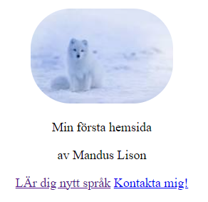
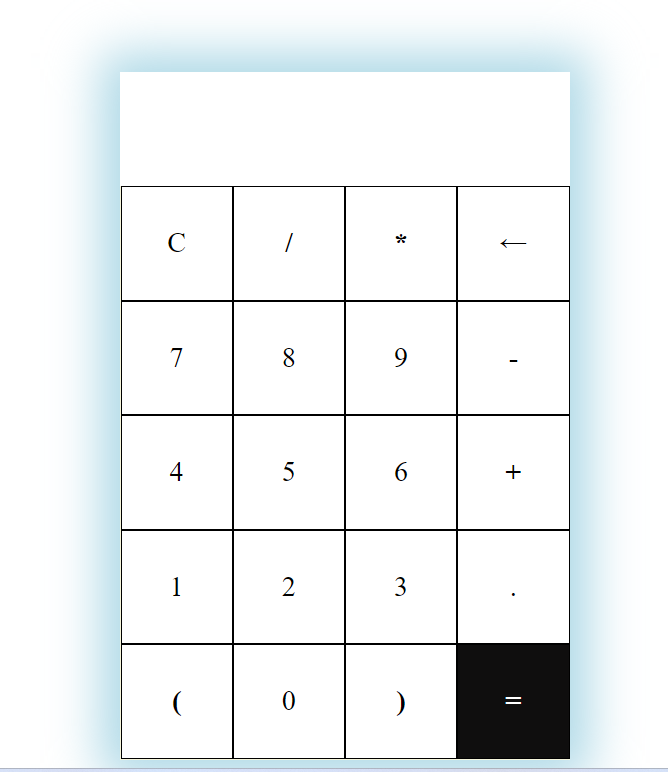

About Me
Right now I am studying at NTI Gymnasiet in Nacka Strand, where I am studying IT, Programming and Media Technology. I have always worked since a young age alongside my studies and I want to continue doing that. My experience with work is that you gain more experience of course, but also become more independent. During my entire upbringing, I have been brought up with the mindset "that it is required". very little, to be able to perform better than the average". To go all the way and going the extra mile is a matter of course for me and part of my personality. I always give my all, in what I do. I think I fit best in a central role, as do:er. Is there anything I can't do? so I always want to learn more and am curious about most things. In my role at the café where I work part-time now, I have taken on extra responsibilities, managed staff, took care of purchases and planned events etc. I am used to reporting to managers, owners and other stakeholders, as well as having overall responsibility. In my role as a salesperson (had two jobs at the same time) I have successfully sold goods in "the hardest selling industry there is", i.e. door salesman. Tough but useful. That's why you should meet me: Organized and Structured - Order and order are A and O for me. I am ambitious and flexible. Likes to organize and plan. Enjoy working at a fast pace with varied tasks. Self-motivated and easy to learn - I am very easy to learn, ambitious and despite my age I am probably already a bit of a "people person" who can both work hard and sell products in the best way. Unprestigious - I take nothing for granted and I would describe myself as a humble, unprestigious and positive person. No job is too small, too big, too dirty or too nice. I have a high work ethic when it comes to completing the assignments I am given and a "Yes" is obvious instead of "soon". If you want a real do:er and people person, choose me. You will not be disappointed!
My Projects
-

Project 1
This was the first project we did. We would download Live Server in Visual Studio Code, Create a website with: text & image, Validate the page with W3C Validator, Create different links, Full, absolute, relative and links within a page and link for email and Change style with CSS and try to make your page look better.
-

Project 2
In this project I learned some basics in Javascript, Decide on a function, Created the project under new folder, Sketched up an interface in Figma or with HTML/CSS, Used grid/flex in CSS in my design and Validate to know if all works as it should.